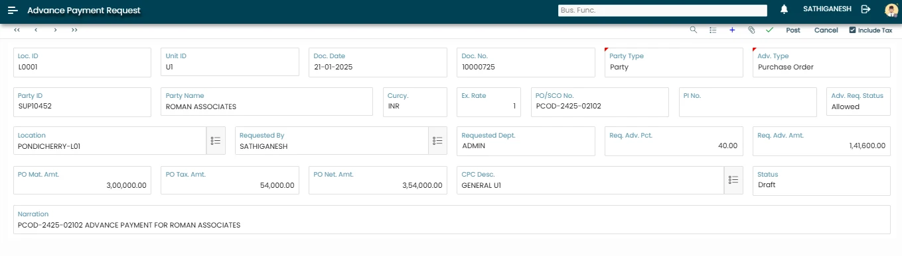

<div data-category="Financials" data-title="Advance Payment Request" data-updated="December 01, 2025" data-contributors="RoadmapIT" data-breadcrumb="Home,Financials,Advance Payment Request">
  <div class="page-content">
    <p>This Screen is used to raise the advance Payment Request.</p>
    <h5>Navigation path:</h5>
    <p class="fs-6">Financials \ Transaction \ Advance \ Advance Payment</p>
    <ul style="list-style-type: none; align-content: center">
      <li class="mouse-icon">
        Clicking the
        <i class="bi bi-plus fs-4 mx-2 text-primary"></i>
        Add button to create the Request.
      </li>
    </ul>
    
    <ul style="list-style-type: none; align-content: center">
      <li class="mouse-icon">Select the Location ID.</li>
      <li class="mouse-icon">Select the Party Type and Adv. Type.</li>
      <li class="mouse-icon">Select the party</li>
      <li class="mouse-icon">Select the Purchase Order for raise the Payment Request.</li>
      <li class="mouse-icon">Enter the Narration.</li>
      <li class="mouse-icon">Enter the Req. Adv. Pct.</li>
      <li class="mouse-icon">Req. Adv. Amount should update based on Adv. %.</li>
      <li class="mouse-icon">Press the post button to complete the entry and the document can be forwarded for approval.</li>
    </ul>
  </div>
</div>
